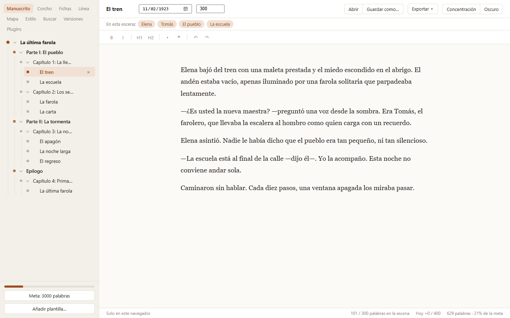
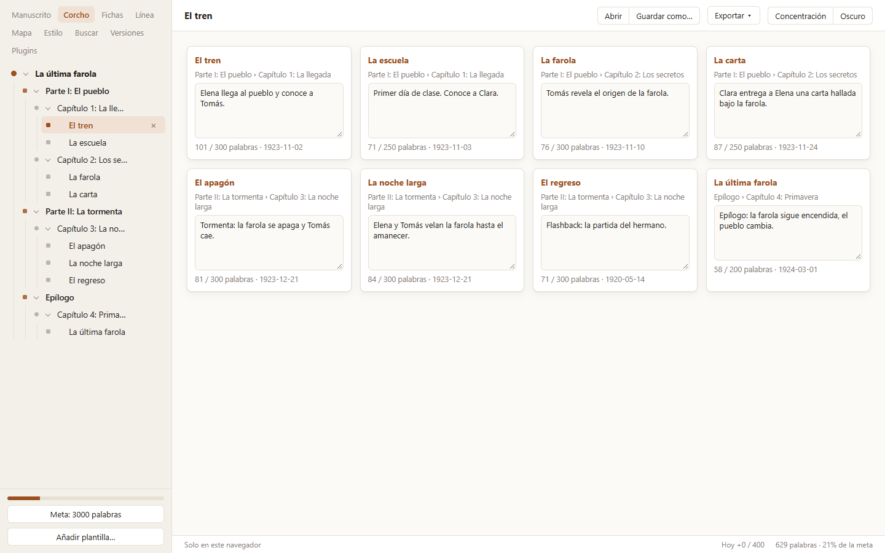
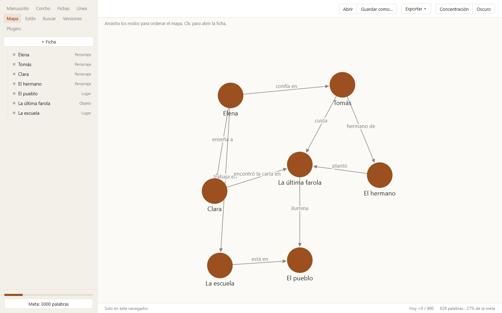
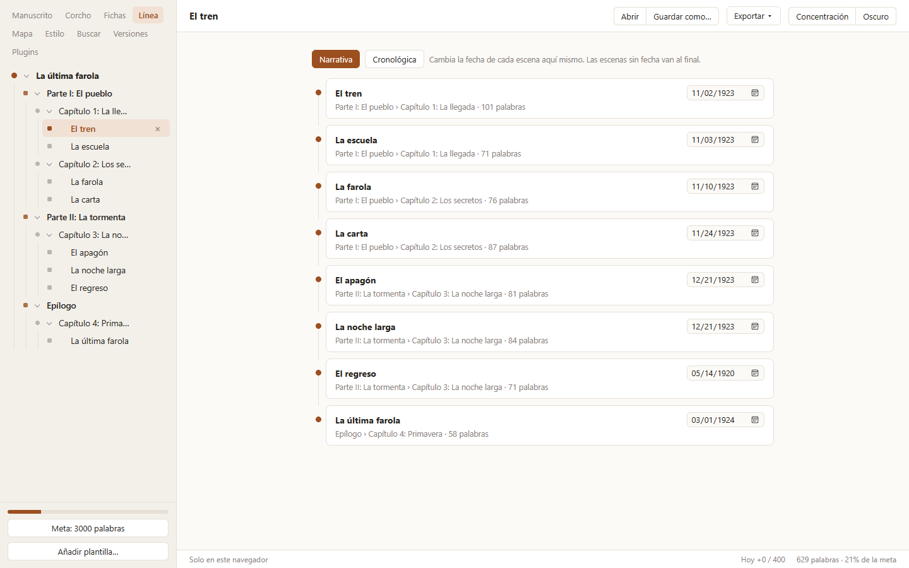
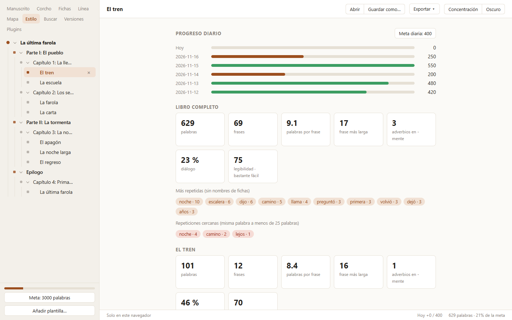
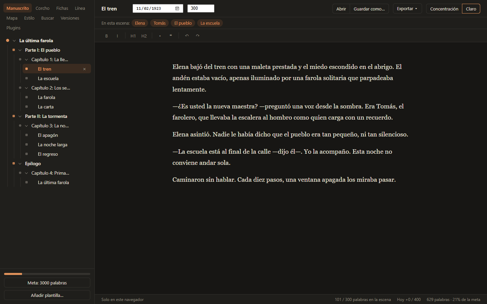

Escribe cualquier historia. Sin bloquearte.
Shakes es una app de escritorio para escribir novelas, cuentos, poesía, ensayos, diarios, guiones de cine, teatro y cómic. Organiza tu obra, construye tu mundo y encuentra ideas cuando no sale nada. Gratis, sin cuenta y sin nube: tus textos son tuyos.
Windows 10 y 11 · gratis

Un lugar para cada tipo de escrito
Al crear un proyecto eliges qué vas a escribir y Shakes se adapta: cada pieza se llama por su nombre y el editor trabaja como ese formato espera.
Todo lo que necesitas para escribir
De la primera chispa a la exportación final, sin cambiar de programa.
Escritura cómoda
Capítulos y partes, cambio de escena con un botón, modo concentración, tamaño de letra y ancho a tu gusto, y retomas justo donde lo dejaste.
Corrector en tu idioma
Ortografía en el idioma de cada libro: unos 90 idiomas. Y un modo «sin subrayados» para escribir sin el crítico interno.
Taller creativo
Personajes completos creados según tu historia, lugares, objetos, giros, «¿y si…?», títulos y ejercicios para cuando te atascas.
Nombres de 62 culturas
De Egipto antiguo a la Colombia de hoy, de los vikingos a las colonias del futuro, con las costumbres de cada una.
Tu mundo, ordenado
Fichas de personajes, lugares, objetos y facciones; Shakes detecta en qué capítulo aparece cada uno y dibuja el mapa de conexiones entre personajes.
Guion profesional
Formato de industria con Tab e Intro, autocompletado de personajes, desglose de escenas, PDF y Fountain. También teatro, cómic y radio.
Planifica a tu manera
Corcho con sinopsis, línea de tiempo narrativa y cronológica, estructuras clásicas (tres actos, Save the Cat, viaje del héroe…) y borrador de historia.
Revisa con lupa
Repeticiones, muletillas, estilo, diálogo, legibilidad, búsqueda y reemplazo en todo el libro y versiones para comparar y restaurar.
Exporta a todo
Word, EPUB, PDF, Markdown, LaTeX, Fountain y manuscrito editorial. Importa desde Word o Markdown.
Plugins
Temas, estructuras y herramientas que se instalan sin actualizar la app.
Tus datos son tuyos
Funciona sin conexión. Guarda en archivos .shks abiertos, con copias automáticas. Sin cuenta, sin nube, sin anuncios.
Claro, oscuro y en tu idioma
Interfaz en español e inglés, tema claro u oscuro y temas extra.
Así se ve





Descargar Shakes
Gratis para siempre. Las actualizaciones avisan dentro de la propia app.
Windows 10 y 11
Última versión en GitHub
Instalación
- Abre el archivo
Shakes_…_x64-setup.exedescargado. - Sigue el asistente. Shakes queda en el menú Inicio.
- Ábrelo, elige qué vas a escribir y ponle nombre. ¡Listo!
El instalador aún no está firmado. Si Windows muestra «Windows protegió su PC», pulsa Más información → Ejecutar de todas formas.
¿Primera vez? Empieza por el tutorial de tu primer proyecto.